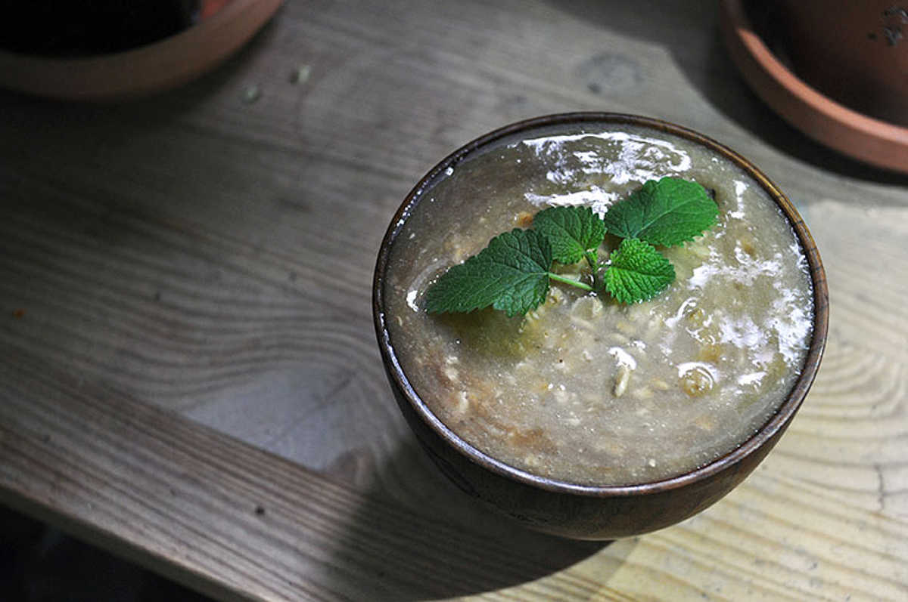

houjicha overnight oatmeal
1 serving — 10 minutes
Mornings are made better with the nutty and earthy flavour of houjicha oatmeal. If you're not familiar with houjicha, visit a tea shop and ask for it, it's a Japanese roasted tea that is often served with sweet and savoury dishes. It's a good low-caffeine alternative to most teas, and adds just the right amount of flavour to oatmeal without overpowering it.
 water 240 ml
water 240 ml houjicha 10 g
houjicha 10 g banana 1
banana 1 flax seeds 15 g, ground
flax seeds 15 g, ground rolled oats 45 g
rolled oats 45 g
oatmeal
- Boil 240 ml (1 cup) of water, then infuse 10 g (2 tsp) of houjicha leaves in a tea strainer. You can leave it anywhere from 1-3 min, it depends how strong you like your tea to be. The longer you brew houjicha the nuttier it'll taste.
- Remove the tea leaves and let cool.
- Add 1 chopped banana (to cut the bitterness of the tea), as well as 15g (1 tbsp) of ground flax seeds (for added nutrition), blend until smooth.
- Mix in 45 g (~1/3 cup) of rolled oats, stir well, and then put it in the fridge overnight. Enjoy for breakfast the next day!